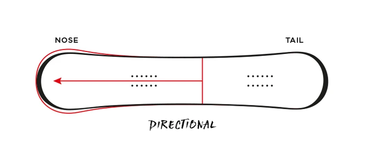
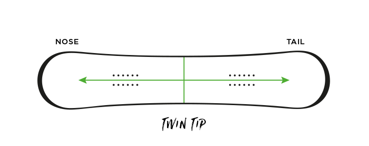
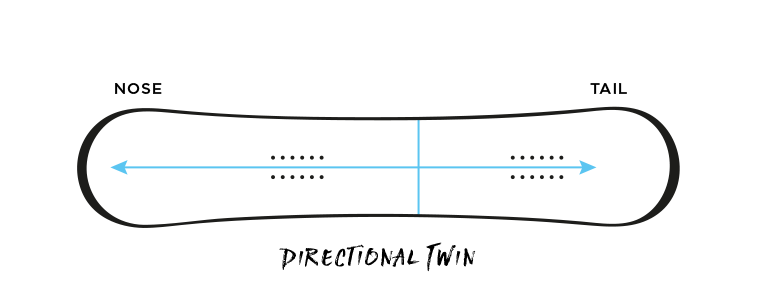
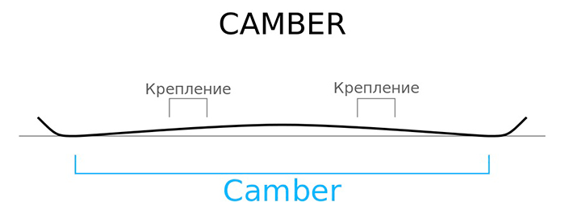
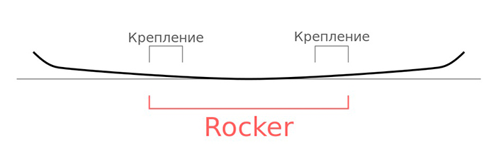
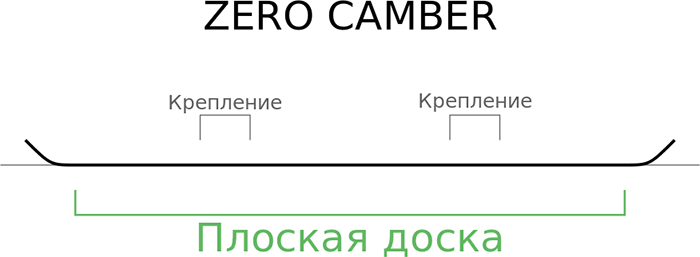

Какие существуют стили катания?
Формы сноубордов
Направленнный
Directional
У таких досок четко определено направление движения. Обусловлено это разницей в конструкции носа и хвоста сноуборда.Данную форму выбирают для спусков по только что выпавшему, нетронутому снежному покрову. Обычной практикой для использования таких досок является сдвиг креплений ближе к хвосту.
Симметричный
Twin
Такие сноуборды имеют абсолютно одинаковую форму, жесткость и конструкцию носа и хвоста. Это является большим удобством для выполнения трюков, т.к. из-за симметричности неважно, правой или левой ногой ехать вперед, на какой угол делать поворот при прыжке на трамплине и т.д. Также симметричные доски обладают отличной гибкостью.
Направленный и симметричный
Directional-Twin
Исходя из названия сразу понятно – это смесь направленной и симметричной досок. При смещении креплений к одному из концов сноуборда, на такой доске можно покататься и по мягкому снегу. А поставив крепления по центру, доска превращается в симметричную, для использования, преимущественно в парках.
Виды прогибов
Камбер
Camber
У таких досок четко определено направление движения. Обусловлено это разницей в конструкции носа и хвоста сноуборда.Данную форму выбирают для спусков по только что выпавшему, нетронутому снежному покрову. Обычной практикой для использования таких досок является сдвиг креплений ближе к хвосту.
Рокер
Rocker
Такие сноуборды имеют абсолютно одинаковую форму, жесткость и конструкцию носа и хвоста. Это является большим удобством для выполнения трюков, т.к. из-за симметричности неважно, правой или левой ногой ехать вперед, на какой угол делать поворот при прыжке на трамплине и т.д. Также симметричные доски обладают отличной гибкостью.
Плоский
Flat
Исходя из названия сразу понятно – это смесь направленной и симметричной досок. При смещении креплений к одному из концов сноуборда, на такой доске можно покататься и по мягкому снегу. А поставив крепления по центру, доска превращается в симметричную, для использования, преимущественно в парках.